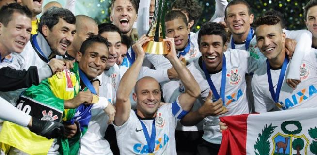

Saiba Mais
Fundação
Às 20h30 do dia 1º de setembro de 1910, à luz de um lampião, na esquina das ruas José Paulino e Cônego Martins, no bairro do Bom Retiro, o grupo de operários formado por Anselmo Corrêa, Antônio Pereira, Carlos Silva, Joaquim Ambrósio e Raphael Perrone fundaram o Sport Club Corinthians Paulista. Com mais oito rapazes, foi formada a reunião dos primeiros integrantes e sócio fundadores do Timão, que teve seu nome inspirado na equipe inglesa Corinthian Football Club, que fazia excursão pelo Brasil. O presidente escolhido por eles foi o alfaiate Miguel Battaglia, que, já no primeiro momento, afirmou: “O Corinthians vai ser o time do povo e o povo é quem vai fazer o time”. Um terreno alugado na Rua José Paulino foi aplainado, virou campo e foi lá que, já no dia 14 de setembro, o primeiro treino foi realizado diante de uma plateia entusiasmada, que garantiu: “Este veio para ficar!”.
Titulos:
* Campeonato Brasileiro: 1990, 1998, 1999, 2005, 2011, 2015 e 2017
* Campeonato Paulista: 30 títulos, sendo o maior campeão da história
* Copa do Brasil: 1995, 2002 e 2009
* Supercopa do Brasil: 1991
* Libertadores da América: 2012
* Mundial de Clubes da Fifa:2000, 2012
* Recopa Sul-Americana: 1
* Torneio Rio-São Paulo: 1950, 1953, 1954, 1966 e 2002

Estádio

Maio de 2014 foi mais uma data histórica para o Sport Club Corinthians Paulista. No dia 10 daquele mês, a Fiel podia, enfim, chamar um lugar de casa: a Neo Química Arena era inaugurada com a realização de um jogo marcante: Corinthians x Corinthians, com a participação de mais de 100 ex-jogadores do Timão.
INFORMAÇÕES
* Capacidade: 49.205
* Maior público: No jogo entre Corinthians e São Paulo pela Copa do Brasil onde o Corinthians venceu por 2x1 teve o total de 46.517 de espectadores
* Gramado: O gramado da Neo Quimica Arena atualmente e considerado o melhor gramado do Brasil
* Maior artilheiro da arena: O paraguaio Ángel Romero é o maior artilheiro da Neo Química Arena, com 38 gols
CURIOSIDADES
1. A Neo Quimica Arena foi o promeiro estádio do Brasil à receber um jogo da NFL, entre Philadelphia Eagles e Green Bay Packers, e os Eagles venceram por 34 a 29.
2. A Arena foi palco de jogos importantes, incluindo a abertura da Copa do Mundo de 2014 entre Brasil e Croácia.

Mundial 2012
*No primeiro jogo, contra o Al Ahly, do Egito, o Timão não mostrou todo o seu futebol. Ainda assim, o elenco não se abateu e chegou para a final com vontade e mostrando qualidade. No dia 12 de dezembro daquele ano, o plantel alvinegro venceu com um magro e sofrido 1 a 0, com gol do camisa 9 Paolo Guerrero
*Pela frente, então, chegou o Chelsea, da Inglaterra, que vinha da conquista da Champions League. Mesmo em fase conturbada, o clube inglês trazia não só a tradição por ser da Europa, continente que não perdia a taça desde 2006, mas também um time muito mais caro e reconhecido que o Corinthians.
*O Timão conseguiu ter a posse de bola e pressionou o adversário. Dessa forma, Paulinho teve uma chance de balançar as redes, mas não conseguiu encontrar espaços, já que o clube inglês estava concentrado na defesa. Na sequência, deixou com Danilo, que tentou uma finalização de direita, só que a tentativa foi bloqueada. A bola, no entanto, subiu e sobrou para Guerrero, que estava livre na pequena área. Ele cabeceou e marcou o gol da conquista.
*De forma incontestável, o Timão superou o rival por 1 a 0. A final aconteceu no dia 16 de dezembro de 2012. Na data, a frieza tática de Tite e as defesas incríveis de Cássio fizeram com que o Corinthians conquistasse mais um título.
*A torcida foi um show a parte. Os apaixonados invadiram o Japão. Mais de 68 mil pagantes estiveram na final no Nissan Stadium, em Yokohama. Eles levaram o clima do Pacaaembu para o Japão. Entre as histórias, existem vários exemplos de pessoas que venderam o carro, largaram o emprego, a família e correram para o outro lado do mundo em prol do Corinthians
Sócrates
Sócrates foi um dos grandes ícones do Corinthians, não só pela sua habilidade no futebol, mas também por sua participação na **Democracia Corinthiana**. Chegou ao clube em 1978 e, em 1982, junto com outros jogadores, liderou o movimento que buscava dar aos atletas mais poder nas decisões do clube, rompendo com a estrutura autoritária da época. A democracia no Corinthians permitiu aos jogadores influenciarem nas escolhas de treinadores, contratações e até nos treinos. Sócrates, médico e intelectual, usou sua influência para discutir questões sociais e políticas, tornando-se um símbolo de liberdade e justiça no futebol brasileiro. Ele jogou no Corinthians até 1984, deixando um legado duradouro.